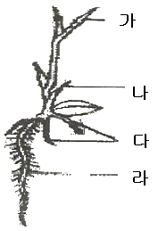
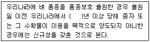
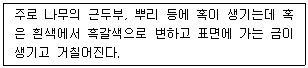

종자산업기사 (2008-07-27 기출문제)
1과목: 종자생산학 및 종자법규
1. 피자식물에서 중복수정(double fertilization)을 바르게 설명한 것은?
- 3n의 접합체, 2n의 배유원핵
- 2n의 접합체, 3n의 배유원핵
- 4n의 접합체, 2n의 배유원핵
- 2n의 접합체, 4n의 배유원핵
(정답률: 86%)

2. 유전자적 웅성불임성을 이용하여 교잡종의 F1의 종자를 채종할 경우 필요한 계통이 아닌 것은?
- 웅성불임계통
- 웅성불임 유지계통
- 임성회복친
- 웅성불임 1대 잡종
(정답률: 알수없음)
3. 인공수분 전 웅화(雄花)를 피대(被袋)하는 이유는?
- 수정능력 향상
- 화분 오염방지
- 병충해 예방효과
- 자식종자 혼입방지
(정답률: 59%)
4. 다음 중 정립이 아닌 것은?
- 미숙립
- 주름진 립
- 원래 크기의 1/2 이상이 종자 쇄립
- 선충에 의한 충영립
(정답률: 알수없음)
5. 시험 또는 연구를 목적으로 농립수산식품부령이 정하는 수량 이하의 종자를 수출 또는 수입하는 경우에는 수출입 신고가 면제되는데 수출입신고가 면제되는 품종당 종자수량(kg)으로 맞는 것은?
- 벼 10kg
- 콩 10kg
- 옥수수 20kg
- 감자 50kg
(정답률: 55%)
6. 벼 포장검사기준에 관한 기술 중 가장 옳은 것은?
- 포장검사는 황숙기에 1회 실시한다.
- 파종된 종자는 종자원이 명확하여야 하며, 포장검사시 1/2 이상이 도복되어서는 아니 된다.
- 포장과 이품종이 논둑으로 구획되어 있는 경우를 제외하고는 원종포는 이품종으로부터 3m 이상 격리되어야 한다.
- 특정해초는 없으며, 특정병에는 도열병 등이 있다.
(정답률: 80%)
7. 발아검사에서 발아묘의 판별 및 발아율 검사에 대한 설명으로 틀린 것은?
- 발아묘 숫자를 비율로 표시하며, 비율은 정수로 한다.
- 발아시험 결과는 반복간 최고치와 최저치 사이의 허용오차 이내일 때는 신뢰할 수 있다.
- 복수발아 종자에서는 단위당 한 개의 정상묘만 시험결과 계산에 넣는다.
- 발아율 검정에서 경실종자 및 휴면종자를 제외하고, 백분율로 계산한다.
(정답률: 알수없음)
8. 다음 중 웅성불임성을 이용하는 작물이 아닌 것은?
- 고추
- 양파
- 오이
- 양배추
(정답률: 46%)
9. 종자산업법에서 정한 3천만원 이하의 벌금에 해당하지 않는 경우는?
- 전용실시권을 침해한 자
- 품종보호권을 침해한 자
- 거짓 그 밖의 부정한 방법으로 품종보호사정을 받은 자
- 선서한 감정인이 심판위원회에 대해 허위 감정한 때
(정답률: 알수없음)
10. 다음 중 종자산업법에서 정하는 품종보호권이 미치지 아니하는 것은?
- 보호품종을 반복하여 사용하여야 종자생산이 가능한 품종
- 보호품종 종자와 명확하게 구별되지 않는 품종
- 보호품종으로부터 기본적으로 유래된 품종
- 보호품종을 육종재료로 이용하여 육성된 품종
(정답률: 알수없음)
11. 다음 춘화처리 효과를 가지고 있는 식물 중 종자춘하형은 어느 것인가?
- 양파
- 당근
- 상추
- 완두
(정답률: 67%)
12. 유사분열을 일명 무슨 분열이라 하는가?
- 감수분열
- 간접분열
- 이형분열
- 배우자분열
(정답률: 알수없음)
13. 화분에 있는 우성유전자의 형질발현이 당대에 나타나는 현상을 무엇이라 하는가?
- 자가불화합성
- 키아스마
- 크세니아
- 단위결과
(정답률: 알수없음)
14. 다음의 약제 중 주로 보리와 밀의 겉깜부기병과 줄무늬병 방제를 위하여 사용하는 것은?
- 메프로닐분제(논사)
- 베노밀·티람수화제(벤레이트티)
- 그사가마이신액제(가스가민)
- 카복신·티람분제(비타지람)
(정답률: 알수없음)
15. 종자는 알맞은 등숙단계에서 채종되어야 한다. 다음 중 화곡류의 채종 수학적기는?
- 유숙기
- 황숙기
- 호숙기
- 완숙기
(정답률: 91%)
16. 그림은 벼의 발아형태이다. 부위별 명칭이 틀린 것은?

- 제1본엽
- 자엽
- 관근
- 종자근
(정답률: 59%)
17. 단자엽식물의 종자에서 배반(scutellum)의 위치와 발아시의 역할은 무엇인가?
- 배유와 배 사이에 위치하며, 양분과 효소의 통로가 된다.
- 유근 위에 위치하며, 뿌리를 보호한다.
- 배아부분에 위치하며, 싹을 보호한다.
- 배유에 존재하며, 전분대사 효소를 말한다.
(정답률: 알수없음)
18. 종자산업법에서 품종보호를 받을 수 있는 작물의 속 또는 종은 무슨 영에 의해 정해지는가?
- 대통령령
- 국무총리령
- 농림수산식품부령
- 농촌진흥청장령
(정답률: 73%)
19. 종자는 성숙 전이라도 수정 후 일정한 기간이 지나면 발아능력을 갖지만 성숙종자보다 발아율은 낮다. 발아능력을 가진 미숙종자를 수확한 후 후숙을 시키면 발아율이 증가하는 작물들로 구성된 것은?
- 보리, 옥수수
- 수박, 보리
- 옥수수, 오이
- 오이, 수박
(정답률: 알수없음)
20. 다음 종자산업법에서의 신규성과 관련된 설명 중 ( )안에 알맞은 숫자는?

- 1
- 2
- 4
- 6
(정답률: 40%)
2과목: 식물육종학
21. 식물의 학명(學名)을 이명법(二名法)으로 표현할 때 가장 보편적인 것은?
- 과(科)와 종(種)
- 종(種)과 품종(品種)
- 품종과 계통
- 속(屬)과 종(種)
(정답률: 알수없음)
22. 다음 중 아조변이를 이용하여 육종하기 가장 용이한 원예작물은?
- 양배추
- 호박
- 사과
- 토마토
(정답률: 70%)
23. 유전적 변이와 환경변이를 구분하는 방법은?
- 후대검정
- 특성검정
- 상관의 이용
- 세포학적 검정
(정답률: 86%)
24. 5개의 화분모세포가 있다. 이들이 감수분열을 하여 형성하는 생식세포(소포자)의 수는 몇 개인가?
- 5개
- 10개
- 15개
- 20개
(정답률: 75%)
25. 같은 방향으로 작용하는 2쌍 이상의 유전자가 누적효과를 나타내는 것은?
- 중복유전자
- 복수유전자
- 변경유전자
- 복대립유전자
(정답률: 알수없음)
26. 연관 관계가 없을 때 유전자형 AaBb를 가진 식물체가 만드는 배우자 중에서 유전자형 Ab를 가진 배우자의 출현 비율은 얼마인가?
- 1/2
- 1/4
- 1/16
- 1/3
(정답률: 80%)
27. 비상동염색체(非相同染色體)간의 염색체 부분교환 현상인 것은?
- 교차
- 상호전좌
- 키아스마
- 역위
(정답률: 65%)
28. 다음 중 배수체를 만드는데 쓰이는 것이 아닌 것은?
- 아세나프텐(Acenaphthene)
- 콜히친(Colchicine)
- 아산화질소(N2O)
- 사이클로트론(Cyclotron)
(정답률: 알수없음)
29. 다음 중 복2배체 작성과 관계 없는 것은?
- 이종속간의 교배
- 게놈의 배가
- 염색체 배가
- homo 접합체의 증가
(정답률: 84%)
30. 다음 중 잡종강세 현상이 나타나는 것과 가장 관계가 적은 가설은?
- 우성유저자 연관설
- 유전자 작용의 상승효과
- 헤테로 접합성설
- 돌연변이 유발설
(정답률: 알수없음)
31. 작물의 근계교배에 대한 설명으로 옳은 것은?
- 가장 극단적인 근친교배는 형매(兄妹)교배이다.
- 관계 유전자가 많을수록 호모(homo)정도가 빨라진다.
- 근교약세 현상은 혈연관계가 가까울수록 심하다.
- 근교약세 현상은 자가수정 작물에서 크게 나타난다.
(정답률: 알수없음)
32. 생산력 검정시험에서 옳지 못한 방법은?
- 사전에 토양의 균일성을 검정한다.
- 포장 및 재배조건은 인위적으로 최상의 상태로 만든다.
- 반복 실험을 하고 통계적으로 분석하다.
- 포장 배치는 임의 배열 등으로 경합을 피한다.
(정답률: 알수없음)
33. 신품종의 유전적 퇴화 원인들만으로 짝지어진 것은?
- 자연교잡, 잡종강세
- 잡종강세, 바이러스병 감염
- 바이러스병 감염, 돌연변이
- 돌연변이, 자연교잡
(정답률: 알수없음)
34. 영양번식작물의 무병주 생산에 가장 좋은 조직배양법은?
- 생장점배양
- 배배양
- 자방배양
- 배주배양
(정답률: 84%)
35. F1 배우자의 비가 AB : Ab : aB : ab = 1 : 4 : 4 : 1 일 때 연관 현상과 교차율은?
- 상인현상으로 교차율 20% 이다.
- 상반현상으로 교차율 20% 이다.
- 상인현상으로 교차율 25% 이다.
- 상반현상으로 교차율 25% 이다.
(정답률: 50%)
36. 생산력 검정의 포장시험을 할 때 오차가 생길 수 있다. 오차가 생기는 원인과 관계 없는 것은?
- 작물의 원산지 파악이 불명확할 때
- 실험계획의 결함과 실험의 취급이 불완전할 때
- 실험결과에 대한 해석이 잘못되었을떼
- 시험조작, 측정, 포장관리 등에 있어서 개인에 의한 차이가 있을 때
(정답률: 59%)
37. 웅성불임현상을 일대잡종 종자 생산에 이용할 경우 가장 유리한 점은?
- 1회에 얻을 수 있는 채종량이 많다.
- 교배에 필요한 노력이 절감된다.
- 임성이 회복된다.
- 잡종의 형질이 우수해 진다.
(정답률: 91%)
38. 옥수수의 격리 채종을 위해 다른 품종과의 최소한의 실용적인 격리거리(隔離距離)는?
- 50 ~ 100m 이상
- 200 ~ 600m 이상
- 10 ~ 50m 이상
- 100 ~ 150m 이상
(정답률: 84%)
39. 폴리진(polugene)을 설명한 것 중 틀린 것은?
- 양적형질에 관여하는 개별 유전자의 지배자가 작은 다수의 유전자군이다.
- 분리세대에서 연속변이의 원인이 된다.
- 환경의 영향을 별로 받지 않는다.
- 각 유전자들 간에는 상호작용이 있을 수 있다.
(정답률: 84%)
40. 자식성 집단에서 F1의 유전자형이 Aa인 개체를 3회 자식한 F4 집단의 동형접합체(호모개체)의 비율은?
- 50%
- 75%
- 87.5%
- 93.75%
(정답률: 알수없음)
3과목: 재배원론
41. 다음은 질소비료의 종류를 화학식으로 나타낸 것이다. 시용하면 음이온이 되어 토양 교질에 잘 흡착되지 앟고 유실되기 때문에 논보다 밭작물에 유리한 비료는?
- (NH4)2SO4
- NH4NO3
- (NH2)2CO
- CaCN2
(정답률: 60%)
42. 맥류는 품종의 파성과 지역에 따라 품종의 선택이 다르게 된다. 다음 중 선택이 가장 잘못된 것은?
- 한지에서 추파하는 경우 추파성이 높은 품종의 선택
- 한지에서 춘파하는 경우 춘파성이 높은 품종의 선택
- 난지에서 추파하는 경우 추파성이 낮은 품종의 선택
- 난지에서 추파하는 경우 추파성이 높은 품종의 선택
(정답률: 알수없음)
43. 무기 성분 중 결핍증상을 하위엽에서 주로 관찰할 수 있는 것으로만 짝지워진 것은?
- N, P
- P, B
- K, Ca
- Ca, B
(정답률: 30%)
44. 저온작물(맥류, 감자 등)의 생육적은 범위로 가장 적합한 것은?
- 0 ~ 10℃
- 5 ~ 15℃
- 10 ~ 20℃
- 15 ~ 25℃
(정답률: 30%)
45. 포도(델라웨어)에서 단위결과를 유발시키기 위하여 이용하는 것은?
- 옥신
- 지베렐린
- 사이토카이닌
- 에스렐
(정답률: 79%)
46. 다음 비료 중 생리적 중성 비료에 해당되는 것은?
- 황산암모니아
- 용성인비
- 염화칼륨
- 질산암모늄
(정답률: 46%)
47. 겨울철의 유채, 시금치의 동사온도 범위(℃)는?
- 0 ~ 5
- -5 ~ 0
- -13 ~ -7
- -17 ~ -15
(정답률: 46%)
48. 남아메리카의 열대지방, 동남아의 열대지역에서 고무나무, 사탕수수 등을 기업적으로 생산하는 재배형식으로 가장 적당한 것은?
- 소경(疎耕)
- 포경(圃耕)
- 식경(殖耕)
- 원경(園耕)
(정답률: 알수없음)
49. 다음 중 습해(濕害)의 대책에 해당되지 않는 것은?
- 습답에서는 휴립(畦立)재배
- 종자에 분의하여 과산화석회 사용
- 심층시비
- 토양개량제 시용
(정답률: 70%)
50. 버널리제이션(vernalization)을 바르게 설명한 것은?
- 버널리제이션은 고온에 의해서만 일어난다.
- 식물호르몬은 버널리제이션 효과를 일부 대체할 수 있다.
- 버널리제이션 효과는 종자에서만 일어난다.
- 버널리제이션에 필요한 온도와 시간은 품종간의 차이가 없다.
(정답률: 알수없음)
51. 한해(旱害, 가뭄해)의 대책 설명으로 부적합 것은?
- 밭에서는 뿌림골을 넓히거나 높게 한다.
- 토양 입단(粒團)을 조성한다.
- 내건성이 강한 품종을 선택한다.
- 질소의 다용을 피한다.
(정답률: 85%)
52. 일반 농업의 특질로 볼 수 없는 것은?
- 공산물에 비하여 수요의 탄력성이 크다.
- 수확체감의 법칙이 적용된다.
- 농산물의 가격변동이 심한 편이다.
- 생산의 조절이 곤란하다.
(정답률: 알수없음)
53. 방사성동위원소의 이용에 관한 설명으로 틀린 것은?
- 식물체 내의 에너지원으로 이용
- 표지화합물로 작물의 생리연구에 이용
- 영양기관의 장기저장에 이용
- 돌연변이를 유발시켜 육종에 이용
(정답률: 64%)
54. C-N율과 작물의 발육에 대한 설명으로 옳은 것은?
- 질소가 많으면 C-N율을 높여 개화를 촉진시킨다.
- C-N율은 유기물이 많은 토양에서 증가한다.
- C-N율이 높아지면 개화를 촉진하는 경우가 많다.
- C-N율이 감소하면 이층이 발달하여 낙엽이 촉진된다.
(정답률: 60%)
55. 콩 종자를 20×50cm 간격으로 1곳에 3립씩 점파 하고자 한다. 10a 에 소요되는 콩 종자의 수로 가장 적합한 것은?
- 30000 개
- 60000 개
- 90000 개
- 120000 개
(정답률: 알수없음)
56. 작물의 내열성에 관여하는 요인 설명으로 틀린 것은?
- 내건성이 큰 것은 내열성도 크다.
- 세포의 결합수가 적고 유리수가 많으면 내열성이 커진다.
- 세포의 점성, 당분함량이 증가하면 대체로 내열성은 증대한다.
- 작물체의 연령이 높아지면 내열성이 증대한다.
(정답률: 59%)
57. 종자 선종에서 까락이 없는 메벼 종자에 알맞은 용액의 비중은?
- 1.03
- 1.06
- 1.10
- 1.13
(정답률: 80%)
58. 다음의 생장조절제 중 유형이 다른 하나는?
- NAA
- IAA
- 2,4-D
- CCC
(정답률: 알수없음)
59. 생육 기간의 적산온도가 가장 높은 작물은?
- 메밀
- 보리
- 담배
- 벼
(정답률: 70%)
60. 작물의 기원과 종류에 대한 설명으로 틀린 것은?
- 작물의 기원지를 찾는 방법은 근연야생종의 분포와 품종의 다양성을 찾는 식물지리학적 방법이 있다.
- De Candolle은 고고학, 언어학적 고찰을 통해 유전자 중심설을 주장하였다.
- 지구상에 존재하는 약 235000종의 식물 중 세계적으로 재배됙 있는 작물은 2200종이다.
- 현재 재배되고 있는 작물의 종류 중에서 식용작물은 약 40% 이다.
(정답률: 알수없음)
4과목: 식물보호학
61. 과수뿌리혹병(根頭癌腫病)의 병원균이 월동하는 주된 장소는?
- 토양
- 잎
- 줄기
- 열매
(정답률: 알수없음)
62. 보르도액을 만드는 원료를 알맞게 연결한 것은?
- 황산동, 수은
- 황산동, 유황
- 황산동, 생석회
- 유황, 생석회
(정답률: 알수없음)
63. 다음 농약 제제 중 고형시용제인 것은?
- 플로우어블(flowable)
- 플로우더스트(flow dust ; FD제)
- 유제(EC)
- 수화제(SP)
(정답률: 59%)
64. 보리, 밀 줄긴고병의 중간 기주는?
- 매자나무
- 좀꿩의다리
- 향나무
- 편백나무
(정답률: 알수없음)
65. 농작업에서의 어네지 투여를 경감하고, 동시에 지표면에 유입된 잡초 종자를 토양 속으로 들어가지 못하게 유도하면서 종자의 발아억제나 유묘 생장기에 잡초를 쉽게 제거하는 방법은?
- 제한경운
- 관배수 조절
- 전면살포 시비
- 방수용 천
(정답률: 알수없음)
66. 다음 병에 대한 방제방법 중 농민의 입장에서 가장 확실하고 안전하며, 값이 싼 방제법은?
- 화학적 방제법
- 저항성 품종 제배
- 생물적 방제법
- 재배적 예방법
(정답률: 알수없음)
67. 향나무가 중간 기주인 병원균은?
- 사과나무 부란병균
- 맥류 붉은곰팡이병균
- 배나무 불마름병균
- 배나무 붉은별무늬병균
(정답률: 46%)
68. 다음 중 광발아 잡초가 아닌 것은?
- 냉이
- 소리쟁이
- 메귀리
- 참방동사니
(정답률: 75%)
69. 다음 보기의 병을 일으키는 병원균은?

- Glomerella cingulata
- Agrobacterium tumefaciens
- Xanthomonas campestris
- Pseudomonas glycinea
(정답률: 80%)
70. 다음 중 벼의 저온성 해충이 아닌 것은?
- 벼줄기굴파리
- 벼애잎굴파리
- 벼잎벌레
- 벼끝동매미충
(정답률: 82%)
71. 다음 중 AChE(acetylcholinesterase) 저해작용 농약은?
- 니코틴
- Pyrethroid 계
- 요소유도체
- Carbamate 계
(정답률: 알수없음)
72. 종자에 발생하는 피해의 원인 중 외관상 나타난 병징만으로 쉽게 구별할 수 없는 것은?
- 곰팡이병
- 세균병
- 바이러스병
- 해충피해
(정답률: 알수없음)
73. 다음 곤충 중 종의 수가 가장 많이 포함된 목(order)은?
- 메뚜기목
- 파리목
- 나비목
- 딱정벌레목
(정답률: 알수없음)
74. 다음 중 잡초를 1년생, 월년생, 2년생 및 다년생으로 구분하는 분류 방식은?
- 잡초의 발생 시기에 따른 분류
- 잡초방제의 실용면에 따른 분류
- 잡초의 생활형에 따른 분류
- 잡초의 토양수분의 적응성에 따른 분류
(정답률: 82%)
75. 곤충과 거미의 일반적인 특징 중 곤충에 대한 설명으로 틀린 것은?
- 머리, 가슴, 배의 3부분으로 되어 있다.
- 가슴, 배에 마디가 있고, 더듬이는 2쌍이 있다.
- 다리는 3쌍이고, 5마디로 구성된다.
- 기관이나 숨문은 몸의 옆에 줄지어 있다.
(정답률: 62%)
76. 다음 중 이화명나방의 학명은?
- Inazuma dorsalis
- Chilo suppressalis
- Oxya chinensis
- Laodelphax striatellus
(정답률: 알수없음)
77. 귀화 잡초로 국화과에 속하는 1~2년생 광엽 잡초는?
- 쇠비름
- 망초
- 명아주
- 돌피
(정답률: 60%)
78. 이상 기온에 의해 발생하는 기상재해가 아닌 것은?
- 냉해(冷害)
- 동해(凍害)
- 상해(霜害)
- 한해(旱害)
(정답률: 알수없음)
79. 다음 중 곤충 체벽(integument)의 구조 중 제일 안쪽 층은?
- 왁스층(wax layer)
- 내원표피층(endocuticle layer)
- 외원표피층(exocuticle layer)
- 시멘트층(cement layer)
(정답률: 알수없음)
80. A유제 50%를 1000배로 희석하여 10a당 8말(160L)을 살포하여 약제 방제하려 할 때 A유제 소요량은?
- 140 mL
- 150 mg
- 160 mL
- 170 mg
(정답률: 알수없음)